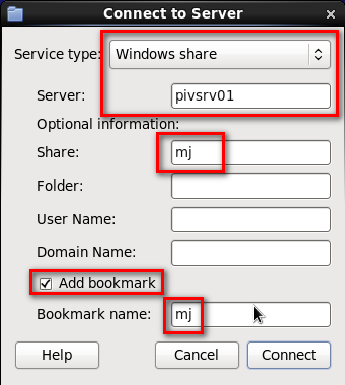
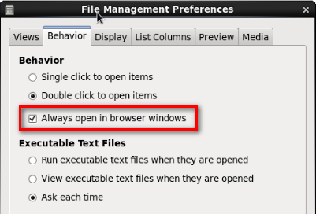

1. Góc trái phía trên màn hình. Chọn Place -> Connect to Server
- Server type: Windows Share
- Server : pivsrv01
- Share : mj
- Check vào "Add bookmark", nhập vào "bookmark name" : mj

2. Chọn edit -> Preferences -> Behavior -> Check vào "Alwaysopen in browser windows"
